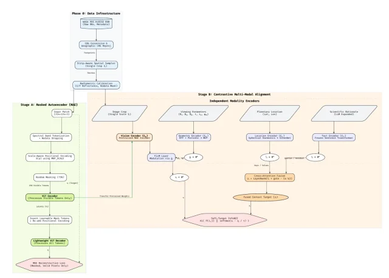

Planetary imagery / 2026
MarsRecon.
Self-supervised and multimodal representations learned from high-resolution orbital imagery of Olympus Mons.

A data-to-representation pipeline
Learn where labels are sparse.
The project calibrates planetary data products, extracts georeferenced patches, and learns visual features before aligning them with text, coordinates, and local–global image context.
Problem
Abundant imagery, limited geological labels.
High-resolution orbital data records rich surface structure across Mars, but sparse labels make conventional supervised learning difficult. MarsRecon explores whether useful, reusable representations can be learned directly from the imagery and its associated context.
Approach
Visual pretraining, then multimodal alignment.
The pipeline calibrates NASA Planetary Data System products and extracts valid, georeferenced patches from HiRISE observations of Olympus Mons. A masked autoencoder learns from unlabeled imagery. The frozen visual encoder is then aligned with observation text, coordinates, and local–global image context.
- Prepare geospatially valid high-resolution image patches.
- Pretrain a Mars-specific visual encoder without labels.
- Align visual features with complementary metadata and text.
- Evaluate reconstruction and cross-modal retrieval on held-out splits.


Contribution
A collaborative GeoAI research project.
I co-developed self-supervised and multimodal methods for Mars orbital imagery and am a co-first author on the manuscript with Marius F. R. Juston and Jay Mahajan. The project grew from graduate GeoAI work at UIUC.
Evaluation
A working pretraining and retrieval pipeline—with clear next tests.
The manuscript reports improved held-out reconstruction as resolution and invalid-token handling improve, along with cross-modal retrieval results for the strongest current model. It also identifies the need for additional crop-overlap controls and downstream geological evaluation before making broader claims about embedding utility.